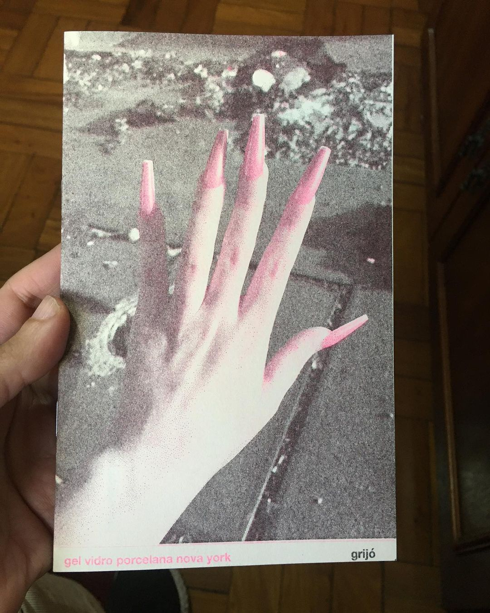
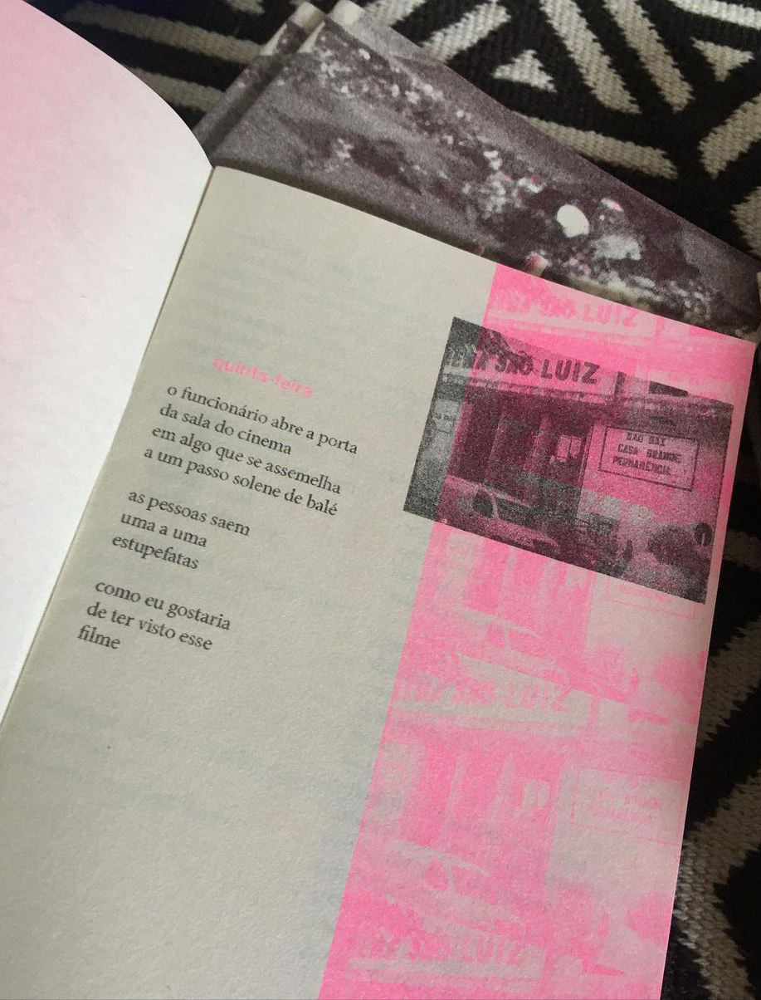
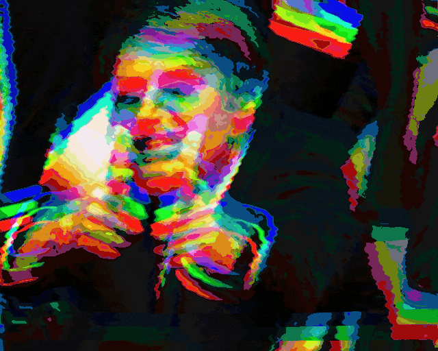

formação
[2022] cursando o CLIPE (Curso Livre de Preparação de Escritores) - Casa das Rosas/Fundação Haroldo de Campos.
[2018] concluiu o curso de graduação em Comunicação Social/Jornalismo pela UFMG
literatura
[2022] a plaquete-zine 'gel vidro porcelana nova york', editada e impressa em 2022 pelo selo faísca lab, conta com 13 poemas e algumas fotografias. foi impressa através da técnica da risografia, nas cores preto e rosa neon, em uma tiragem de 100 exemplares. ainda há cópias disponíveis para venda.
 jornalismo
[2018] a reportagem de antiquado a meme faz uma análise sobre o meteórico crescimento de bolsonaro nas redes.
[2016] reportagem multimídia 'Orisday, Orisnight' conta a história de Oris, um carismático brincante, agente cultural da cidade de Olinda. Para acesso à página, clique aqui.

[2015] 'Comer é político - O desafio de tornar-se vegetariano: é possível conciliar paladar, bolso e coração?', matéria escrita para a revista Coletiva, da Unicamp.
[2015] Alumínio - A cadeia da reciclagem de latinhas, de ponta a ponta foi uma matéria escrita por Camila Coeli, Josué Benvindo, Jullie Utsch e Luiza Lambert para a disciplina de Laboratório de Produção de Reportagem, orientada por Carlos D'Andréa na UFMG.